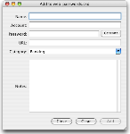

Adding an Entry
Entries in CiphSafe are simply collections of several bits of data: a name (each unique), account name (AKA user name), password, URL, a category, and notes. The name is the only necessary option, all the rest can be left empty.

To add a new entry:
- Click the Add Entry button, OR choose Edit > Add Entry
- Fill in the applicable fields needed; name is required
- CiphSafe can generate a random password for you, simply click the Generate button next to the password field
- For Category, you can either select one from the pop-up menu or enter a new one
- The Notes area can handle the typical text enhancements like bold, italic, etc; you can also drop images and other items on it as well